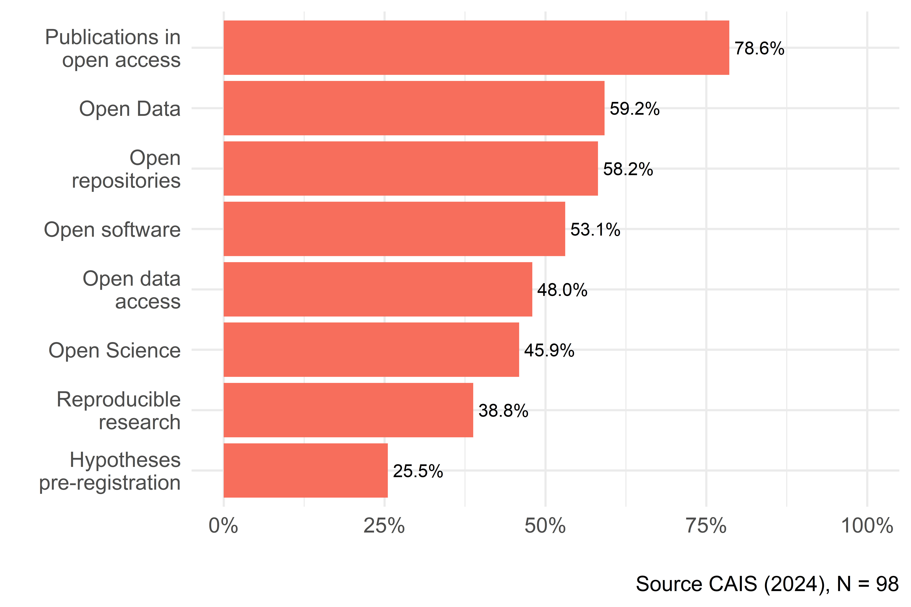
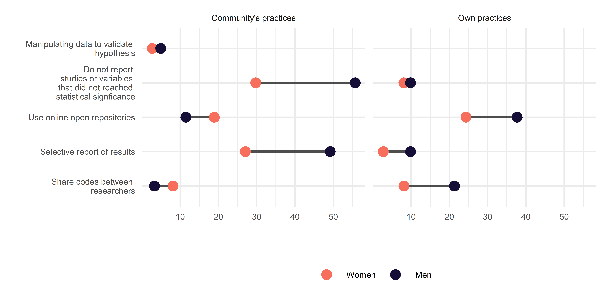
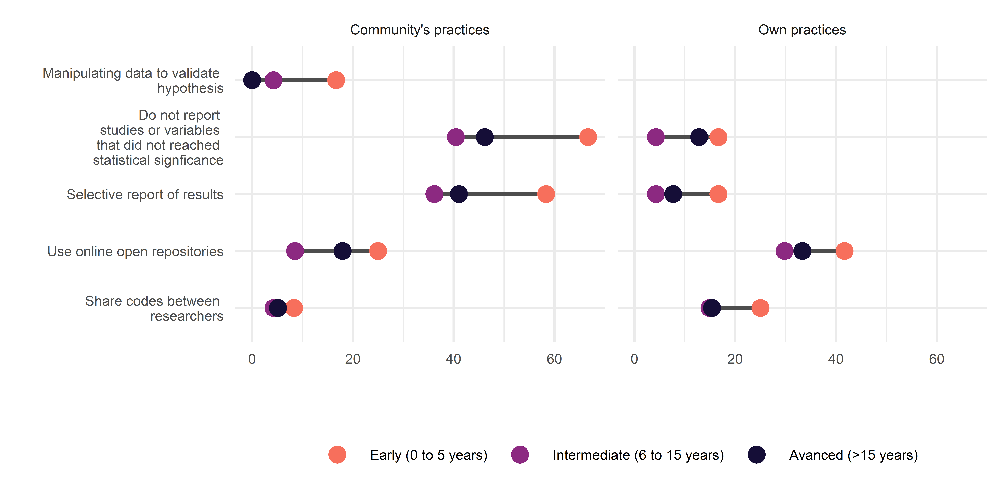
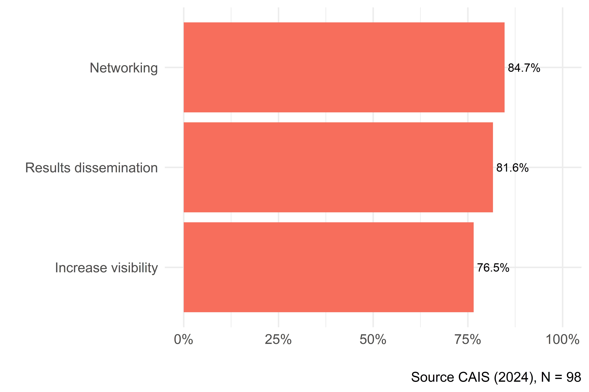
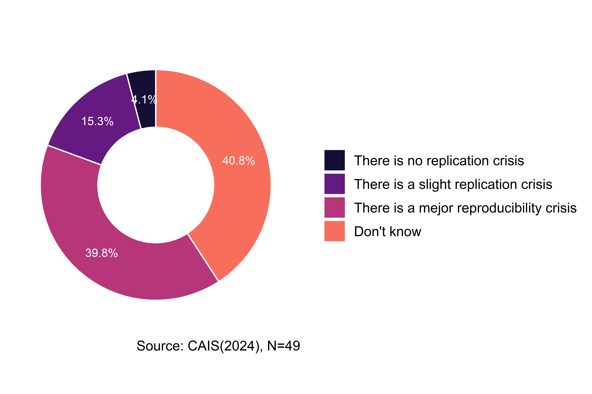
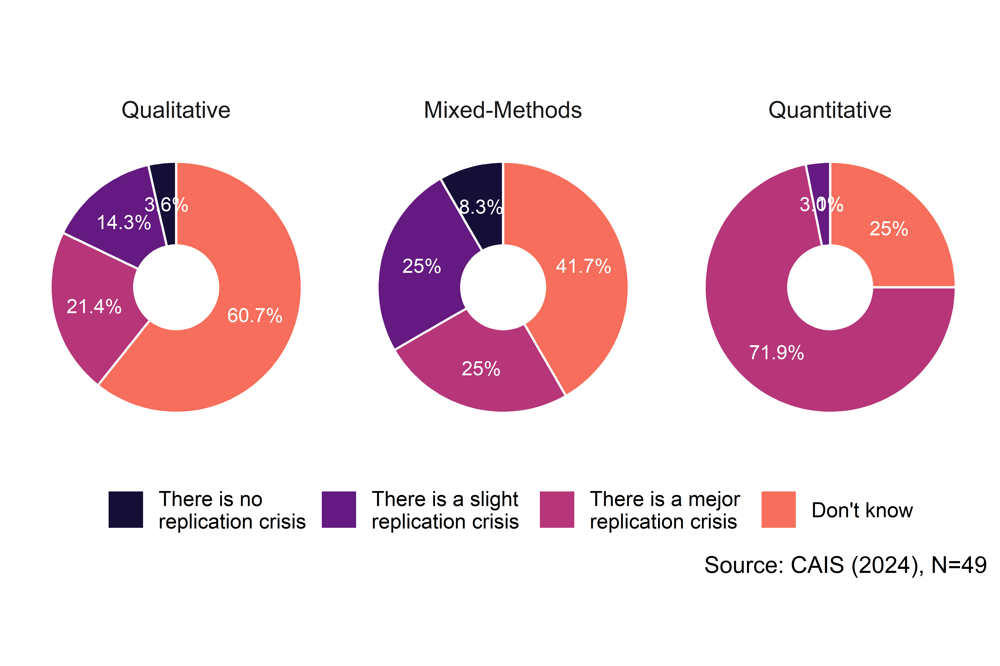
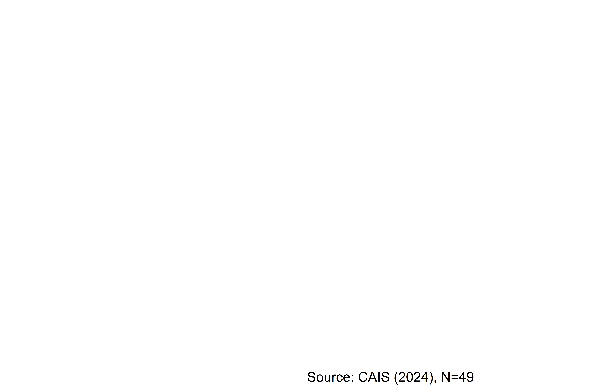

| No | Variable | Stats / Values | Freqs (% of Valid) | Valid | Missing |
|---|---|---|---|---|---|
| 1 | edad [factor] |
1. 28 a 34 años 2. 35 a 49 años 3. 50 o más años |
\12 (12.2%) \55 (56.1%) \31 (31.6%) |
98 (100.0%) |
0 (0.0%) |
| 2 | grado [factor] |
1. Magíster 2. Doctorado |
\17 (17.3%) \81 (82.7%) |
98 (100.0%) |
0 (0.0%) |
| 3 | etapa [factor] |
1. Inicial (0 a 5 años) 2. Intermedia (6 a 15 años) 3. Avanzada (>15 años) |
\12 (12.2%) \47 (48.0%) \39 (39.8%) |
98 (100.0%) |
0 (0.0%) |
| 4 | enfoq [factor] |
1. Cualitativo 2. Mixto 3. Cuantitativo |
\28 (29.2%) \36 (37.5%) \32 (33.3%) |
96 (98.0%) |
2 (2.0%) |
Ciencia social abierta en Chile: Apertura, transparencia y reproducibilidad
Juan Carlos Castillo ![]()
Kevin Carrasco
Resumen
ES: Background: En un contexto en que cada vez más crece la preocupación por la replicabilidad, transparencia y acceso a las ciencias, este proyecto se propuso describir los niveles de conocimiento, creencias y prácticas de ciencia abierta en la comunidad académica de las ciencias sociales en Chile; Methods: Se realizó un diseño mixto consistente en dos estudios. El estudio cualitativo consistió en entrevistas semiestructuradas a 14 académicos, las cuales fueron analizadas mediante un análisis temático. El estudio cuantitativo consistió en el análisis descriptivo de un cuestionario (N=98). El cuestionario abordó temas de Ciencia Abierta, diseño transparente, datos abiertos e investigación reproducible; Results: En su conjunto, ambos estudios apuntan a niveles bajos de conocimiento y prácticas relacionadas a la ciencia abierta. Además, pese a una valoración positiva general, fue posible identificar resquemores particulares relacionados a la posibilidad de aplicar estos principios en la investigación cualitativa, su tensión con los imperativos de productividad académica y suspicacias respecto a sus motivaciones; Conclusion: El artículo identifica desafíos importantes para la implementación de medidas de ciencias abierta en las ciencias sociales en Chile, principalmente su tensión con las políticas de financiamiento público a la investigación social y con los principios tradicionales de la investigación cualitativa.
EN: Background In a context of growing concern for replicability, transparency, and access to science, this project proposed to describe the levels of knowledge, belief, and practices of open science in the academic community of the social sciences in Chile. Methods: An exploratory mixed-method design was conducted. The qualitative study consisted of semi-structured interviews with 14 academics, which were analyzed by performing a thematic analysis. The quantitative research consisted of a descriptive analysis (N=98). The questionnaire addressed issues about Open Science, transparent design, open data, and reproducible research. Results: Overall, both studies pointed to low levels of knowledge and practices related to open science. In addition, despite a generally positive assessment, it was possible to identify particular concerns associated with the possibility of applying these principles in qualitative research, their tension with the imperatives of academic productivity, and suspicions regarding researchers’ motivations. Conclusion: The article identified important challenges for the implementation of open science initiatives in the social sciences in Chile, mainly their tension with public funding policies for social research and with the traditional principles of qualitative research.
Introducción
Durante los últimos años, el mundo académico ha experimentado una serie de desafíos relacionados con el concepto de apertura, que pueden describirse en dos aspectos principales. El primero se refiere a la llamada crisis de replicación (Baker 2016; Nosek et al. 2015; Peng 2015), referida a las dificultades para replicar los resultados de la investigación debido a la falta de transparencia en el proceso de investigación, donde se ha sido posible evidenciar importantes variaciones en los resultados en equipos de investigación con datos idénticos (Breznau 2021). Esto ha tenido como consecuencia no sólo el fracaso en la replicación de muchos hallazgos publicados, sino también el descubrimiento y la denuncia de datos y resultados falsos (Chopik et al. 2020) con el fin de lograr publicar en revistas de alto impacto. El segundo desafío proviene de la apertura en términos de acceso, mediante el cual varias comunidades académicas han reaccionado contra las altas barreras de pago y el modelo de negocio impuesto por las compañías editoriales para acceder a los productos de la investigación científica: las universidades pagan una suscripción para acceder al trabajo incluso de sus propios investigadores, y a su vez el público fuera de la academia debe pagar nuevamente por obtener productos financiados por sus impuestos. Una de las reacciones más comentadas ha sido la cancelación de las suscripciones a revistas como Elsevier por parte de grandes universidades como UCLA, lo cual posteriormente se resolvió a través de un acuerdo basado en la adopción y promoción de prácticas en Open Access.
Las barreras en la transparencia y el acceso son síntomas de una cultura académica presionada por la publicación de indicadores que están sesgados hacia resultados “significativos” en términos estadísticos, lo que lleva a una tendencia a forzar los resultados (p-hacking), llegando incluso a manipular y falsear datos para confirmar las hipótesis propuestas (Head et al. 2015) o también el establecer hipótesis ad-hoc luego de conocer los resultados de un estudio (Hollenbeck y Wright 2017; Kerr 1998). Esto tiene como consecuencia que finalmente el principal público objetivo de la ciencia son los editores de revistas de alto rango, dejando de lado a otros públicos como la sociedad civil, el estado y la ciudadanía. Tal escenario es particularmente sensible para las ciencias sociales, que se supone basan sus estudios en problemas sociales relevantes para las personas, las comunidades y las sociedades en general.
Un número creciente de iniciativas en todo el mundo están abordando temas de replicabilidad, transparencia y acceso en la ciencia, como el Centro para la Ciencia Abierta (COS), la Iniciativa de Berkeley para la Transparencia en Ciencias Sociales (BITSS) y el proyecto Teaching Integrity in Empirical Research (TIER). Estas iniciativas fomentan la apertura en diferentes etapas del proceso de investigación, como la transparencia de los diseños de investigación a través de prerregistros de estudios, la reproducibilidad de los análisis y la manipulación de datos, así como en la publicación de preimpresiones libres de barreras de pago. Muchas de estas prácticas han sido adoptadas por revistas como recomendaciones o incluso requisitos para su publicación, así como promovidas por instituciones científicas gubernamentales. Todo esto implica un gran cambio en la forma de concebir, hacer y enseñar ciencia. Además, parece un paso necesario para hacer que la ciencia sea más relevante y cercana a quienes están fuera de la academia. En otras palabras, sería difícil mejorar la apertura y el intercambio con las comunidades locales si el trabajo dentro de la academia es mayormente cerrado y no colaborativo.
Como muchos otros desarrollos en la ciencia, el movimiento de la ciencia abierta ha llegado lentamente a América Latina, particularmente en las ciencias sociales. Aunque ha habido algunas iniciativas en los últimos años (como el Congreso de Ciencia Abierta y Ciudadanía en Argentina 2018, OpenCon LatAm Colombia 2019), la mayoría de ellas son promovidas desde las ciencias naturales. En esta línea, a partir del año 2021 la Agencia Nacional de Investigación y Desarrollo (ANID) realizará la implementación de una Política de acceso abierto de información científica y datos de investigación, la cual busca establecer un estándar de acceso público a los productos de investigación que hayan sido financiados por recursos de ANID, por lo tanto es de carácter estratégico desarrollar iniciativas que se propongan contribuir a la apertura de la ciencia.
A partir de este diagnóstico, el presente proyecto tiene por objetivo analizar el conocimiento, creencias y prácticas de ciencia abierta en académic_s de ciencias sociales en Chile, y desde este análisis generar recomendaciones y propuestas tanto para el quehacer académico como a las políticas científicas.
Antecedentes
Revisión ciencia abierta en general (Kevin, práctica)
Principales componentes de la ciencia abierta (JC - modelo LISA)
Antecedentes políticas de ciencia abierta Chile
Metodología
La investigación se basó en un diseño mixto secuencial-exploratorio. Este abordaje consiste en un método de dos etapas en que, usualmente, se inicia con un análisis cualitativo y es seguido por el desarrollo de un instrumento (Creswell y Plano Clark 2018).
La integración de ambas técnicas se justifica en que, aunque existe experiencia internacional estudiando prácticas y valoraciones hacia la Ciencia Abierta, no se encontraron investigaciones previas que abordaran esta temática entre académicos chilenos. De tal modo, el diseño aquí propuesto supuso una primera fase de exploración cualitativa que permitió tener una primera impresión de las percepciones en torno al concepto de ciencia abierta en la comunidad académica chilena. Los resultados de esta primera indagación fueron integrados al diseño del instrumento cuantitativo, aplicado en segunda instancia.
Además de informar la construcción del instrumento, la integración entre la etapa cualitativa y cuantitativa se realizó mediante la síntesis de los hallazgos de ambas fases. De tal forma, se buscó extraer conclusiones coherentes, evaluando como los datos cuantitativos son capaces de ampliar o validar los hallazgos iniciales del estudio cualitativo, generando una comprensión integral del estado de la Ciencia Abierta en las ciencias sociales chilenas.
Estudio Cualitativo
Método
Se realizaron 13 entrevistas semiestructuradas a investigadores empíricos de ciencias sociales, seleccionados a partir de un muestreo aleatorio simple por criterios. El marco muestral consideró a todos los académicos que se hubiesen adjudicado un Proyecto Fondecyt Regular entre 2018 y 2019, en los grupos de estudio Antropología y Arqueología, Ciencias económicas y administrativas, Ciencias jurídicas y políticas, Psicología y Sociología. Considerando cuotas por sexo y grupo de estudio, se seleccionaron aleatoriamente uno o dos informantes por sexo para cada grupo de estudio. Se excluyeron los casos en que los investigadores seleccionados se abocaran estrictamente a la investigación teórica. Asimismo, se excluyeron casos como: a) investigadores del grupo de estudio Ciencias jurídicas y políticas dedicados a la investigación filosófica; b) investigadores del grupo de estudio Antropología y Arqueología no dedicados a la antropología social; c) investigadores del grupo de estudio Psicología abocados a la neurociencia. También, dado que el grupo de estudio de sociología está compuesto por investigadores de otras disciplinas, como la psicología social y el trabajo social, se aleatorizó hasta asegurar la selección de, al menos, un sociólogo. La siguiente tabla da cuenta de la composición final de la muestra:
| Grupo de estudio | Hombre | Mujer |
|---|---|---|
| Antropología y arqueología (Antropología) | 0 | 2 |
| Ciencias económicas y administrativas (Economía) | 1 | 1 |
| Ciencias jurídicas y políticas (Ciencia política) | 2 | 1 |
| Psicología | 1 | 2 |
| Sociología | 1 | 2 |
Aunque no se consideró como criterio de inclusión muestral, los participantes reflejan la diversidad metodológica observada en las ciencias sociales en Chile. De tal modo, 6 investigadores utilizan predominantemente métodos cualitativos; 5 trabajan mayormente con métodos cuantitativos; y 2 utilizan métodos mixtos.
Las entrevistas semiestructuradas se realizaron a través de videollamada, con una duración entre cuarenta minutos y una hora. Se abordaron tópicos relativos a la familiarización y conocimiento de los investigadores respecto a la ciencia abierta, su participación en prácticas de ciencia abierta, sus actitudes y valoraciones frente a prácticas de apertura y transparencia, así como frente a una futura posible obligatoriedad de tales, entre otros.
Se empleó análisis temático, en tanto es un método que permite identificar y describir patrones de significados (Braun y Clarke 2006), así como el conjunto de relaciones y jerarquías que entre estos se generan, organizados en torno al concepto de ciencia abierta y las ideas asociadas a este, a partir de códigos tanto semánticos como latentes (Boyatzis 2010). En este sentido, este método es particularmente útil para comprender los puntos de vista, conocimientos, experiencias y valores de los participantes respecto a la ciencia abierta, a partir del conjunto de datos.
El análisis fue realizado principalmente por dos investigadores, apoyado por el software de análisis cualitativo ATLAS.ti en su versión 9.0.5. El proceso de codificación fue realizado simultáneamente por ambos investigadores y discutido en reuniones periódicas con el equipo de investigación, con fines de asegurar triangulación entre investigadores a lo largo del proceso de análisis (Nowell et al. 2017). Asimismo, se archivaron sistemáticamente versiones del proyecto y sus productos, a la vez que se llevó el registro de las reflexiones personales de los investigadores y las discusiones de equipo en torno al análisis en un diario reflexivo, para poder resguardar la auditabilidad del proceso de investigación (Lewins y Silver 2007).
Resultados
Ciencia Abierta: Un concepto difuso
Inicialmente el concepto de ciencia abierta aparece como una idea difícil de definir, aparentemente lejana para los participantes. La mayoría de entrevistados señalan que están poco familiarizados con la idea de ciencia abierta, y no lo asocian a prácticas e iniciativas concretas. Sin embargo, esto coexiste con diferentes grados de conocimiento de los problemas que enfrenta, prácticas comunes de apertura y transparencia e, incluso, experiencias de investigadores que habían participado directamente en una serie de iniciativas institucionales o internacionales de ciencia abierta.
En lugar de mencionar prácticas concretas de ciencia abierta, el concepto es asociado principalmente a una variedad de iniciativas y orientaciones normativas de la investigación. Se asocia fuertemente con iniciativas de vinculación con el medio y divulgación científica, así como con el acceso de la población general o de “las comunidades” a los resultados de investigación.
También algunos entrevistados asocian el concepto a la producción de conocimiento, refiriendo al involucramiento de participantes, comunidades y grupos de interés en el proceso de investigación; el empleo de métodos mixtos (Sociología, cualitativos) o la interdisciplinariedad (Antropología, cualitativos; Sociología, cualitativos). Sólo unos pocos hacen referencia a prácticas como la apertura de datos o la publicación en revistas open-access.
Pese a la dificultades en su definición, se evidencia una valoración inicial positiva de la ciencia abierta. Estas van desde una relación directa con valores democráticos y la democratización del conocimiento, hasta evaluaciones más vagas y dubitativas. Con todo, igualmente se observaron algunas percepciones negativas desde algunos investigadores, refiriéndose a la ciencia abierta como una “fiebre” – esto es, como una tendencia pasajera – o como un “proyecto demasiado ambicioso”.
Actitudes, creencias y prácticas de Ciencia Abierta
- Apertura de resultados
En las entrevistas, la idea de apertura se encuentra asociada fundamentalmente a la apertura de resultados. Existe consenso en priorizar estar práctica, ya sea mediante revistas Open Access, políticas como la Ruta Dorada (Psicología, cuantitativo; Antropología, cualitativo) o compartiendo preprints y versiones finales en redes sociales académicas o personales.
En relación con la iniciativa de compartir y solicitar artículos o versiones previas en redes sociales académicas, destacan dos actitudes principales entre los investigadores. Por un lado, se percibe una actitud de sospecha hacia este tipo de prácticas, al considerarlas una mezcla de altruismo e interés personal (Psicología, cuantitativos). Aunque la colaboración científica se valora y es deseable, se reconoce que beneficia al investigador, al aumentar su número de citas. Esta sospecha de una motivación instrumental, vinculada a políticas de financiamiento, lleva a algunos investigadores a abstenerse de estas prácticas.
Por otro lado, se encontró que la existencia de cláusulas de no difusión en muchas revistas actúa como un desincentivo para compartir resultados, aunque ningún investigador reportó haber sido sancionado o fiscalizado por compartir sus publicaciones. Más allá de cualquier inquietud, la alta valoración de la apertura de resultados impulsa a los investigadores a compartir sus publicaciones en redes sociales académicas u otras instancias.
Para facilitar el acceso a los resultados de sus proyectos, algunos investigadores han recurrido a medios legales, como la Ruta Dorada. Esta alternativa permite el acceso libre a publicaciones mediante un pago del autor. Sin embargo, esta opción es vista negativamente por algunos entrevistados, quienes, debido al aumento de tarifas, han expresado su rechazo a pagar nuevamente por este servicio (Psicología, cuantitativos; Antropología, cualitativos).
Frente a esto, se cuestiona si realmente estas iniciativas reflejan los principios de la ciencia abierta, aputando de forma crítica al poder de mercado de las grandes editoriales. Se argumenta que estas prácticas se basan en trasladar los costos de accceso desde los usuarios a los investigadores (Psicología, cuantitativos). No obstante, estas visiones conviven con perspectivas más prágmaticas que reconocen que, dado el modelo basado en el referato gratuito y la venta de acceso, alguien debe asumir el costo de la apertura (Ciencia Política, métodos mixtos)
Por otro lado, es posible identificar actitudes generalmente negativas hacia la política de difusión de resultados de ANID, con base en las percepciones de deficiencia de esta a la hora de lograr volver público el conocimiento producido con fondos públicos. Los entrevistados dan cuenta de la rigidez de la política, en la medida que dificulta la realización de ciertas iniciativas de difusión dirigidas a público extra-académico, como la publicación de Podcasts.
Además, se pone en relieve que la estructura de financiamiento de la ANID pone mayor énfasis en las publicaciones en revistas indexadas en WoS y Scopus, en desmedro de revistas de libre acceso en español. Aunque éstas últimas tienen menor impacto académico, se reconoce que son más accesibles tanto para el público general como para los tomadores de decisiones. A su vez, se percibe que estas prácticas conllevan una “transferencia de capital del sur al norte global” (Antropología, cualitativos). Esto pues, investigaciones financiadas con recursos estatales son publicadas en revistas con barreras de pago, a las cuales los investigadores nacionales o sus universidades deberán pagar - en general, con fondos públicos - para poder acceder a ellos.
Los entrevistados identifican tensiones entre la necesidad de abrir y difundir los resultados de investigaciones financiadas con recursos públicos, la rigidez de la política de difusión de la ANID y su esquema de financiamiento e incentivos. Para equilibrar la presión de publicar en revistas de alto impacto a la vez que se cumplen los principios de apertura, los investigadores han adoptado estrategias como diversificar los productos de su investigación. Una de ellas es el “sacrificio de publicaciones”; lo que implica diferir resultados: algunos se envían a revistas de alto impacto para maximizar puntajes en postulaciones; otros, a revistas locales, abiertas y en español, con mayor facilidad de acceso al público general.
En línea con la cita anterior, se observa que la idea de apertura no se limita al acceso a publicaciones académicas, sino a que los resultados tengan “impacto social”. Frente a esto, se adoptan prácticas tales como la publicación de columnas y editoriales en medios de prensa escrita (Psicología, cuantitativo), creación de documentales (Sociología, cualitativo), e instancias de devolución con comunidades investigadas u otras similares (Antropología, cualitativo; Psicología, cuantitativo).
En lo que respecta al acceso a publicaciones científicas, los entrevistados han destacado el papel que desempeñan poseen las universidades en que se desempeñan a través de sus bibliotecas. Por ello, y como se señaló en apartados anteriores, los entrevistados tienden a plantear que no han tenido dificultades para acceder a publicaciones.
Por otro lado, otros señalan que en América Latina las prácticas de acceder a productos científicos como pre-prints o working papers, a través de mecanismos informales o mediante piratería, son extendidas entre los investigadores y otorgan otro medio para hacer frente a los problemas de acceso sin mayores consecuencias.
- Transparencia del diseño
Sólo algunos entrevistados declararon haber publicado un pre-registro de sus investigaciones en la web Open Science Framework (Psicología, cuantitativos; Ciencia política, métodos mixtos), o bien, a partir de iniciativas levantadas por revistas (Ciencia política, métodos mixtos; Economía, cuantitativos).
En el caso de economía se declara que el pre-registro es una práctica extendida y dado los protocolos de la American Economic Association, lo cual ha sido evaluado de forma positiva pero, en algunos casos, como un estándar excesivo debido a su obligatoriedad en muchas revistas.
Asimismo, destaca el que un entrevistado haya enviado a revisión editorial un pre-registro en un número especial para este tipo de productos. Ambas experiencias parecen apuntar a la importancia de las iniciativas editoriales a la hora de incentivar prácticas de transparencia en el proceso de investigación.
Pese a estas experiencia, la gran mayoría de los entrevistados no estaban realmente familiarizados con el concepto de pre-registro. Otro grupo de entrevistados sí conocía la idea, pero sin practicarlo, esbozando distintas argumentaciones tales como:
La idea de que el pre-registro solo es posible en cierto tipo de investigaciones – las cuantitativas con hipótesis – por lo que su práctica no tiene sentido en otros diseños (Psicología, cualitativos; Economía, cuantitativos)
Se argumenta que el pre-registro puede constituir una “camisa de fuerza” (Ciencia política, cualitativos), sobre todo en caso de seguir una lógica inductiva. Para algunos investigadores, el diseño sólo existe en su ejecución (Sociología, cualitativos), por lo que no se puede asegurar la equivalencia entre un diseño previo y el producto final.
-Preocupaciones asociadas a los derechos de propiedad intelectual al publicar diseños de investigaciones que aún no son llevadas a cabo (Psicología, cuantitativos).
En suma, pese a destacar el hecho de que el pre-registro de hipótesis permite asegurar que una investigación no incluye prácticas como el HARKing (Economía, cuantitativos), el bajo conocimiento y formación en esta práctica; su asociación a ciertos tipos de investigación; las limitaciones metodológicas planteadas; y las preocupaciones asociadas a las presión por publicar que señalan los entrevistados están a la base de las sospechas y consiguiente generalización de no practicar el pre-registro.
- Apertura de datos
Las actitudes positivas frente a la apertura de datos se fundamentan principalmente en la creencia de que esta es útil para el desarrollo de la ciencia. Esto, pues, se entiende que favorece el impacto científico de las publicaciones asociadas a los datos; permite ahorrar recursos humanos y monetarios destinado a la producción de datos; y reduce el impacto en comunidades marginadas o grupos sociales estudiados con mayor frecuencia.
Especialmente en el caso de las investigaciones financiadas con fondos públicos, la mayoría de los investigadores mostraron una actitud altamente favorable a la apertura de datos, y varios señalaron que debería ser un requisito más enfático u obligatorio. Algunos investigadores incluso sostuvieron la idea de que los datos en este tipo de investigaciones son bienes públicos, y la no disponibilización de los datos se percibía como un acaparamiento ilegítimo.
Por otro lado, algunos investigadores cuestionan la obligatoriedad de la apertura de datos, destacando la inversión personal y los costos adicionales que implica. Argumentan que los datos son propiedad del investigador, al menos temporalmente, ya que su producción requiere innovación, creatividad y la construcción de relaciones con sujetos o instituciones. Para estos investigadores, del tal modo, la producción de datos es una producción intelectual, no una simple inversión de recursos ejecutada por el investigador.
Además, se constata una tensión entre la apertura de datos y la presión por publicar, no sólo por el tiempo que el investigador deba dedicar a la apertura, sino también por la presión por productos científicos con preguntas o diseños originales y novedosos. Varios investigadores asocian la apertura de los datos a la pérdida de control sobre su uso, y la posible dificultad de publicar utilizando datos abiertos.
Asimismo, algunos investigadores cuestionan el sentido de abrir los datos, pues sostienen que es difícil utilizar datos públicos de forma novedosa porque ya han sido utilizados, y que no necesariamente se adecuan a la especificidad de la investigación en ciencias sociales.
Acompañando esta actitud suspicaz respecto a la utilidad de la apertura de datos, los entrevistados señalan los costos metodológicos y riesgos éticos que perciben los investigadores en la práctica. Por un lado, la totalidad de los investigadores consideran que la mayor parte de los datos cuantitativos no debieran requerir protocolos especiales de ética ni condiciones de uso, exceptuando por datos producidos en poblaciones específicas o en los estudios de economía en que los datos pertenecen a empresas privadas.
Por otro lado, la apertura de datos cualitativos enfrenta retos significativos desde el punto de vista de los entrevistados, como el resguardo de la identidad de los participantes. Se menciona que, incluso si fuera posible movilizar los recursos humanos para la anonimización de datos, el riesgo de afectación para muchas comunidades excede su anonimato. Además, la descontextualización de los datos, debido a la pérdida de rapport entre investigador y comunidades, limita el análisis y desincentiva su uso.
Cabe destacar que a pesar de la percepción de diferencias en facilidad y pertinencia de apertura entre datos cualitativos y cuantitativos, sólo dos de los investigadores entrevistados, uno cualitativo y uno cuantitativo, habían practicado alguna vez la publicación abierta de datos más allá de los requisitos editoriales y de compartir datos directamente con otros investigadores.
- Transparencia del análisis:
La transparencia del análisis es valorada por su contribución al avance científico y al aprendizaje metodológico de nuevos investigadores. Además, se percibe y se valora una creciente exigencia de las revistas de alto impacto por apartados metodológicos más detallados en investigaciones cualitativas, y por la apertura de los códigos de análisis en los estudios cuantitativa. De tal modo, esta mayor transparencia se asocia con una mayor rigurosidad analítica y a la validez de los resultados.
Las prácticas y expectativas sobre la transparencia en investigaciones cualitativas y cuantitativas difieren. En las primera, la transparencia se asocia principalmente con la claridad metodológica en las publicaciones, complementado ocasionalmente con anexos que detallan algunos procedimientos. Sin embargo, no se da prioridad a la publicación de insumos como libros de códigos u outputs de softwares, ni se mencionan expectativas de reproducibilidad y replicabilidad.
Por su parte, la transparencia de análisis cuantitativos tiende a asociarse a la disponibilización, pública o privada, de los códigos de análisis elaborados. Destaca el hecho de que, muchas veces, esta disponibilización tiende a solicitarse desde las revistas académicas. Si bien no se tematiza del todo, es posible inferir que la mayor extensión de la utilización de software para estos procedimientos, en comparación con lo que sucede en investigación cualitativa, tienda a facilitar la consolidación de un conjunto de prácticas y actitudes más favorables hacia la transparencia de los análisis.
No obstante, ningún investigador declaró haber publicado abiertamente su código de análisis, ya que estos suelen compartirse de forma privada, a través de redes académicas o contactos personales. Se menciona que los códigos son como “cepillos de dientes” (Economía, cuantitativos), por ser altamente personales y no estar diseñados para el intercambio público. Además, complicaciones éticas y metodológicas, junto con la necesidad de claridad y orden de los códigos para que estos sean útiles, resaltan la carencia de un estándar para su publicación. Por último, se menciona que en algunas disciplinas, como la Economía, los investigadores no han migrado a softwares de código abierto, debido a la persistencia en el uso extendido de programas con barreras de pago.
Estudio Cuantitativo
Método
Se diseñó un cuestionario a partir de la revisión de literatura (Baker 2016; Delikoura y Kouis 2021; Enke et al. 2012; Gross y Ryan 2015; Hail, Lang, y Leuz 2020; Hodonu-wusu, Noorhidawati, y Abrizah 2020; Lacey, Coates, y Herington 2020; Ljubenković et al. 2021; Lopez Cardenas y Cubero-Castillo 2021; Knudtson et al. 2019; Pardo Martínez y Poveda 2018; Rodriguez 2014; Rowley et al. 2017; Stürmer et al. 2017; Zhu 2020), así como de los hallazgos de la etapa cualitativa.
El cuestionario consistió en 91 preguntas divididas en los siguientes módulos:
Ciencia Abierta: 18 ítems relativos al conocimiento y la valoración general de los investigadores hacia la Ciencia Abierta
Diseño Transparente: 20 ítems que abordan prácticas propias y percibidas en la comunidad sobre la transparencia en los diseños de investigación. Esto incluye tanto prácticas positivas (por ejemplo, compartir códigos u otros materiales de investigación en un repositorio en línea de acceso público) como negativas (por ejemplo, creación post-hoc de hipótesis y explicaciones de datos).
Datos abiertos: 19 ítems relativos a prácticas, conocimiento y valoración del acceso abierto a los datos de investigación.
Investigación reproducible: 15 ítems que indagan sobre conocimiento y valoración de la reproducibildiad de la investigación en Ciencias Sociales y la “crisis de reproducibilidad”.
Acceso abierto a publicaciones: 14 ítems que tratan sobre conocimiento, prácticas y valoración de la publicación de artículos en revistas Open Access.
Política de Acceso Abierto de la ANID: 10 ítems sobre conocimiento y evaluación la Política de Acceso Abierto a la Información Científica y a Datos de Investigación de la Agencia Nacional de Investigación y Desarrollo de Chile (ANID).
El cuestionario fue aplicado mediante la plataforma FormR (Arslan et al., 2020; Arslan, 2025). FormR es un software de código abierto que permite diseñar cuestionarios complejos con un gran nivel de personalización. Al estar integrado con RStudio (R+ RMarkdown), facilita el trabajo colaborativo, independiente de la extensión del cuestionario. La plataforma permite la autoaplicación del cuestionario, ya se mediante una computadora o mediante teléfono celular.
Para construir la muestra, se enviaron correos de forma masiva a investigadores que se hubieran ganado fondos de investigación estatales, facultades y departamentos de distintas disciplinas de ciencias sociales, así como centros y núcleos de investigación. Además, se realizó difusión de la Encuesta mediante redes sociales y en eventos académicos. Finalmente, se lograron 98 respuestas completas. La descripción de la muestra obtenida se presenta en Tabla 1.
Se realizó un análisis descriptivo uni y bivariado de los indicadores claves del cuestionario. El análisis se abocó a describir conocimientos, prácticas y valoraciones de los encuestados en torno a la ciencia abierta y los constructos descritos anteriormente. Estas variables fueron cruzadas por grupo etario, enfoque de investigación, etapa en la carrera académica, grado académico y género, con el fin de detectar posibles diferencias entre grupos.
Resultados
Conocimientos
Los niveles de familiaridad con conceptos relacionados a la ciencia abierta refrendan lo observado en las entrevistas cualitativas, como se observa en la Figura 1. Así, el concepto más reconocido por los encuestados es el de acceso abierto a publicaciones (79%), en línea con lo descrito en la etapa anterior, donde la idea de apertura se encontraba relacionada predominantemente a los resultados y publicaciones de la investigación. Ideas como la apertura de datos (59%), el uso de software libre para el análisis (53%), y el propio concepto de ciencia abierta (46%) tienen niveles de conocimiento medio entre los encuestados. En el otro extremo, sólo un 25% de los encuestados mencionan estar familiarizados con el pre-registro de hipótesis.

En general, los niveles de conocimiento parecen ser mayores entre investigadores jóvenes y con enfoque predominantemente cuantitativo, como se expone en la Figura 2. Los encuestados entre 28 y 34 años, así, muestran mayores niveles de conocimiento sobre softwares libres, y los conceptos de investigación reproducible y ciencia abierta (Figura 2 (a)). Con todo, los investigadores entre 35 y 49 años muestran mayores niveles de conocimiento de los preregistros de hipótesis y del acceso abierto a datos. Los investigadores cuantitativos, en tanto, presentan mayores niveles de conocimiento de todos los conceptos, salvo en el acceso abierto a publicaciones (Figura 2 (b)).


En la misma línea, La Política de Acceso Abierto a la Información Científica y a Datos de Investigación muestra niveles de conocimiento de intermedios a bajo. En concreto, solo la mitad de los encuestados han escuchado hablar sobre la política de acceso abierto de la ANID. Por otro lado, solo un 26% conoce el plan de gestión de datos de la política de acceso abierto de la ANID.
Prácticas
- Práctica propias y prácticas de la comunidad
En general, se observa una baja frecuencia de prácticas relacionadas con la ciencia abierta, como se aprecia en Figura 3. Un 32% de los encuestados siempre o casi siempre utiliza repositorios en línea para subir información relacionada a sus investigaciones, y un 16% declara compartir códigos entre investigadores (Figura 3 (b)). Este tipo de prácticas son más comunes entre investigadores hombres, aquellos cuyo enfoque predominante es cuantitativo, y quienes están en una etapa inicial de su carrera académica.


Es interesante que, en general, los investigadores declaran mejores prácticas propias que las percibidas en la comunidad. De tal modo, sólo un 14% cree que siempre o casi siempre la comunidad utiliza repositorios en línea para subir información relacionada a sus investigaciones, y un 5% cree que los investigadores comparten códigos con esa frecuencia (Figura 3 (a)).
Esta brecha es cierta también en lo relativo a las malas prácticas. Un 9% de los encuestados declara que casi siempre o siempre no informa estudios o variables que no alcanzaron significación estadística, mientras que un 45% percibe esta práctica como frecuente en la comunidad. Por otro lado, mientras un 7% declara reportar selectivamente resultados, el 40% cree que esto ocurre siempre o casi siempre entre la comunidad. Finalmente, mientras nadie reconoce manipular datos para validar una hipótesis, el 4% afirma que esto ocurre siempre o casi siempre en la comunidad.
Es curioso que al desagregar el análisis en distintos grupos, se repiten ciertas tendencias: Los investigadores hombres, de enfoque cuantitativo y de carrera inicial son, al mismo tiempo, quienes reconocen mayor frecuencia de prácticas propias, tanto negativas como positivas, como quienes perciben la mayor cantidad de prácticas negativas en la comunidad. Estas diferencias se pueden ver en detalle en Figura 4



- Barreras para la Ciencia Abierta
Por otro lado, se observa una alta percepción de barreras para el desarrollo de la ciencia abierta en todas sus dimensiones. La Falta de políticas es reconocida como la principal barrera en todas las dimensiones, como se puede apreciar en la Figura 5. La falta de conocimientos también aparece como una barrera importante, particularmente para el diseño transparente, la apertura de datos y la investigación reproducible. Por último, la falta de incentivos es reconocida como otro aspecto que dificulta la apertura de datos.
Respecto a este último punto, se abordaron los incentivos que podrían tener los investigadores para abrir sus datos. Como se aprecia en la Figura 6, tanto generar redes, como difundir a la comunidad datos financiados con recursos públicos y aumentar la visibilidad propia son altamente valoradas como incentivos para la apertura de datos.

Es interesante constatar que, como se ve en la Figura 7, difundir resultados es valorado transversalmente, hay grupos donde la valoración de motivaciones extrínsecas tienen una mayor preponderancia. Particularmente, el generar redes y aumentar la visibilidad son incentivos más valorados por mujeres (Figura 7 (a)) e investigadores de entre 35 y 49 años (Figura 7 (b)).


Valoraciones
- Valoraciones sobre medidas de Ciencia Abierta
En general, se valora positivamente la posibilidad de adoptar medidas de Ciencia Abierta en las Ciencias Sociales, como se puede observar en Figura 8 . El acceso abierto (92%), la replicación de hallazgos (67%), el reporte de resultados no estadísticamente significativos (76%), y la disponibilización en línea de datos y materiales de análisis (72%), todas muestran un alto nivel de aceptación entre los encuestados. La única excepción es el pre-registro de hipótesis, que solo tiene un 42% de evaluación positiva. Esto se explica por un mayor nivel de desconocimiento (17% dice no conocer la medida), además de las reticencias ya observadas en las entrevistas del estudio cualitativo.

Salvo por el acceso abierto a publicaciones, que es valorada transversalmente por todos los grupos, estas medidas son apoyadas en mayor medida por investigadoras mujeres y por investigadores con enfoque cuantitativo, como se puede apreciar en la Figura 9.


- Valoraciones sobre la Crisis de Reproducibilidad
Como se evidencia en la Figura 10, el 39% de los encuestados cree que hay una crisis importante de reproducibilidad, mientras que el 40% no sabe si la hay.

Además, se identificaron diferencias respecto al enfoque de investigación (ver Figura 11). La preocupación es mayor entre los investigadores cuantitativos, ya que el 70% cree que la crisis es importante. Si bien entre los investigadores cualitativos no se llega a negar la crisis, sí hay un 60% que desconoce si la hay o no.

Por otro lado, el 59% cree que el 30% o menos de las investigaciones en ciencias sociales son reproducibles; el 83% cree que menos de la mitad de las investigaciones en ciencias sociales son reproducibles, como se muestra en Tabla 2.
Investigaciones
| Reproducibles | Frecuencia | Acum (%) |
|---|---|---|
| 0 | 1 | 1.02 |
| 10 | 16 | 17.35 |
| 20 | 13 | 30.61 |
| 30 | 23 | 54.08 |
| 40 | 3 | 57.14 |
| 50 | 25 | 82.65 |
| 60 | 4 | 86.73 |
| 70 | 4 | 90.82 |
| 80 | 4 | 94.90 |
| 90 | 5 | 100.00 |
Esto va en línea con que el 40% de los encuestados ha intentado reproducir resultados de otros investigadores (Figura 12 (a)). De este porcentaje, solo el 20% de los intentos han logrado una reproducción completa, mientras que el 69% ha logrado reproducciones parciales (Figura 12 (b)).


- Valoraciones Política de Ciencia Abierta de ANID
En primera instancia, la Política de Ciencia Abierta de ANID encuentra buena acogida entre los encuestados. Así, el 90% considera que está de acuerdo o muy de acuerdo con que ANID continúe desarrollando políticas de ciencia abierta, como se muestra en Figura 14 (b). Asimismo, el 84% considera bastante o muy necesario la implementación de políticas de acceso abierto, como se observa en Figura 13 (a).


Sin embargo, hay otras prácticas que encuentran una menor acogida. Así, tanto la obligatoriedad del prerregistro, como se muestra en Figura 14 (a), como la de la reproducibilidad, como se observa en Figura 14 (b), obtienen el apoyo solo del 50% de los encuestados.


Por último, la política de difusión de la ANID es evaluada negativamente por la mayoría de los encuestados. Solo un 24% considera que esta política es buena o muy buena, como se observa en Figura 15.

Discusión
Bajo conocimiento, pocas prácticas.
Ambos estudios apuntan a un niveles medios o bajos de conocimiento de conceptos relacionados a la ciencia abierta, y niveles aún más bajos de prácticas. El concepto es asociado, principalmente, a la apertura de resultados. Ahora bien, el estudio cualitativo apunta a que ésta no se entiende únicamente como publicación en revistas de acceso abierto, sino también a otras formas de vincularse con la comunidad y de generar impacto — entendido más allá de las métricas de las revistas académicas.
Esto, además, se encuentra relacionado a una serie de prácticas que apuntan a la apertura y la transparencia de los resultados de investigación. Así, en el estudio cualitativo fue posible observar recuentos de experiencias en publicaciones de acceso abierto, uso de la “Ruta Dorada” y compartir artículos o pre-prints mediante redes sociales o privadas.
Ahora bien, los niveles de conocimiento y prácticas bajan sustancialmente en lo relativo a conceptos y medidas relacionadas al diseño transparente, la apertura de datos y la transparencia de análisis. En general, el estudio cuantitativo parece distinguir que hay grupos de investigadores que muestran mayores niveles de conocimiento y prácticas, particularmente los investigadores más jóvenes y aquellos cuyo enfoque predominante es cuantitativo.
El bajo nivel de conocimiento es reconocido como una de las principales barreras para llevar a cabo prácticas e implementar medidas concordantes a los principios de la ciencia. Sin embargo, prácticas relacionadas a la transparencia del diseño (como los prerregistros de hipótesis), a la apertura de datos (hacer datos públicos o compartirlos con otros investigadores), o a la transparencia del análisis (como compartir códigos de análisis), encuentran muchas más barreras y reticencia por parte de los investigadores.
Valoración positiva general, resquemores particulares
Como concepto general, la ciencia abierta es vista con buenos ojos. Se destaca que sus principios permitirían difundir mejor los resultados entre la comunidad científica, evitando malas prácticas como el p-harking. Además, aumentaría la posibilidad de generar impacto más allá de las métricas académicas, facilitando la lectura de los resultados por parte de las comunidades y los tomadores de decisiones. Esto se conjuga con una conciencia de que el financiamiento público de las investigaciones impone cierta responsabilidad de que los resultados y datos estén abiertos a la comunidad académica y general. Por ello, no resulta sorpresivo que el 90% de los encuestados estén a favor de que ANID implemente políticas de acceso abierto.
Sin embargo, una vez que se indagan en prácticas particulares, empiezan a surgir resquemores respecto a la posibilidad y la conveniencia de implementar medidas de ciencia abierta relacionadas a la transparencia del diseño, la apertura de datos y la transparencia en el análisis. Se identificaron tres nudos fundamentales:
En primer lugar, la dificultad de aplicar muchas de estas medidas en la investigación cualitativa. Salvo por la apertura de resultados, la evaluación positiva de prácticas relacionadas a la ciencia abierta es mayor entre investigadores con enfoque cuantitativo, y menor entre quienes practican enfoques predominantemente cualitativos. Esto va en línea con los observado en el primer estudio, donde se observó como el prerregistro de hipótesis y la apertura de datos generan importantes choques a nivel epistemológico, metodológico y ético con los principios tradicionales de la investigación cualitativa. Del mismo modo, la crisis de reproducibilidad aparece como una preocupación mucho mayor entre los investigadores cuantitativos, en línea con lo observado en el primer estudio, donde se aprecia que la reproducibilidad apenas aparece en el horizonte de los investigadores cualitativos.
En segundo lugar, la dificultad de conciliar los principios de la ciencia abierta con los imperativos de productividad académica impuestos por universidades y agencias públicas. Incluso la apertura de resultados, el principio con mayor legitimidad, debe enfrentar la dificultad de que la estructura de financiamiento y las políticas de difusión de ANID favorecen la publicación en revistas con barreras de pago. Por otro lado, medidas como el prerregistro y la apertura de datos levantan suspicacias sobre la protección de la propiedad intelectual de los investigadores, y que limitan la originalidad y el impacto de futuras publicaciones.
Por último, se observaron reticencias hacia las motivaciones detrás de la implementación de estas medidas. Para algunos investigadores, estas prácticas estarían lejos de escapar de las criticadas lógicas de difusión y financiamiento. Por ejemplo, se argumenta que compartir resultados y datos reporta beneficios personales, mediante el aumento citas, en consonancia a las exigencias de productividad académica.
En esa línea, el estudio cuantitativo apunta a que efectivamente construir redes y mejorar la visibilidad están entre las principales motivaciones para la apertura de datos, especialmente entre investigadores mujeres y de trayectorias académicas intermedias. Más allá de cualquier juicio moral sobre las motivaciones de estos investigadores, resultaría interesante indagar porque hay grupos específicos que estarían más inclinados a aceptar medidas de ciencia abierta por razones extrínsecas.
Valoración crítica de la política de difusión de la ANID.
Tanto en el estudio cualitativo como en el cuantitativo se pudo apreciar una percepción crítica hacia las políticas de difusión y de acceso abierto de la ANID. Principalmente, se observa una tensión entre la necesidad de transparencia e impacto en la comunidad de investigaciones financiadas con recursos públicos, y el esquema de financiamiento de ANID que favorece la publicación en revistas que, por lo general, presentan barreras de pago.
Los investigadores asocian esto a dos problemas Por un lado, se percibe que limita la posibilidad real de impacto de las investigaciones, alejando sus resultados de las comunidades y de los tomadores de decisiones. Por otro lado, se pone en relieve que este esquema resulta en el uso de grandes cantidades recursos públicos para financiar el negocio de grandes compañías editoriales científicas del primer mundo.
Conclusión
Los estudios aquí presentados apuntan que, para la comunidad de las ciencias sociales en Chile, la ciencia abierta está asociada fundamentalmente al acceso abierto a los resultados de la investigación, ya sea mediante revistas de acceso abierto o mediante otras formas de difusión. Esto viene acompañado de una serie de prácticas, así como de una valoración positivas de estas medidas, y posiciones críticas hacia las políticas de difusión y financiamiento promovidas por ANID. Pese a esto, otras dimensiones de la ciencia abierta (el diseño transparente, la apertura de datos y la transparencia del análisis), presentan menores niveles de conocimiento, menor frecuencia de prácticas y una evaluación ambivalente.
Ahora bien, se observaron algunas diferencias entre grupos de investigadores, particularmente respecto al enfoque de investigación. De tal modo, investigadores con enfoque cuantitativo declararon mayores niveles de conocimiento, mayor cantidad y frecuencia de prácticas, mayor preocupación por la crisis de reproducibilidad y una mayor valoración de las medidas promovidas por la ciencia abierta. Entre investigadores cualitativos, en cambio, se observaron mayores reticencias, que van desde barreras prácticas hasta preocupaciones epistemológicas.
La edad y el género también parecen incidir en el conocimiento, prácticas y valoraciones hacia la ciencia abierta. Futuras investigaciones podrían apostar a formular modelos que expliquen diferencias en las disposiciones hacia la ciencia abierta, así como distinguir entre motivaciones intrínsecas y extrínsecas para aceptar este tipo de medidas.
En su conjunto, ambos estudios plantean desafíos importantes para las ciencias sociales abiertas en Chile. En primer lugar, se plantea la necesidad de revisar las políticas de financiamiento y de difusión de ANID para ir en mayor concordancia tanto con las necesidades de los investigadores como con los principios de la ciencia abierta. Así, las preocupaciones levantadas por los participantes sobre el destino que se les da a recursos públicos son de suma relevancia y no pueden ser ignoradas.
En segundo lugar, los estudios ponen en relieve la necesidad de cerrar brechas de conocimientos y de incentivos que permitan una mayor apertura hacia la aplicación de medidas de ciencia abierta en otras dimensiones además de la apertura de resultados. Esto implica abrir espacios de debate metodológico y epistemológico que permitan superar los resquemores observados entre algunos grupos de investigadores, particularmente aquellos con un enfoque predominantemente cualitativo.
Referencias
Baker, Monya. 2016. «1,500 Scientists Lift the Lid on Reproducibility». Nature 533 (7604): 452-54. https://doi.org/10.1038/533452a.
Boyatzis, Richard E. 2010. Transforming Qualitative Information: Thematic Analysis and Code Development. Thousand Oaks, Calif.: Sage.
Braun, Virginia, y Victoria Clarke. 2006. «Using Thematic Analysis in Psychology». Qualitative Research in Psychology 3 (2): 77-101. https://doi.org/10.1191/1478088706qp063oa.
Breznau, Nate. 2021. «Does Sociology Need Open Science?» Societies 11 (1): 9. https://doi.org/10.3390/soc11010009.
Chopik, William J., Christopher R. Chartier, Lorne Campbell, y M. Brent Donnellan. 2020. «Relationship Science and the Credibility Revolution: An Introduction to the First Part of the Special Issue». Personal Relationships 27 (1): 132-37. https://doi.org/10.1111/pere.12312.
Creswell, John W, y Vicki L Plano Clark. 2018. Designing and Conducting Mixed Methods Research. SAGE Publications.
Delikoura, Eirini, y Dimitrios Kouis. 2021. «Open Research Data and Open Peer Review: Perceptions of a Medical and Health Sciences Community in Greece». Publications 9 (2): 14. https://doi.org/10.3390/publications9020014.
Enke, Neela, Anne Thessen, Kerstin Bach, Jörg Bendix, Bernhard Seeger, y Birgit Gemeinholzer. 2012. «The User’s View on Biodiversity Data Sharing — Investigating Facts of Acceptance and Requirements to Realize a Sustainable Use of Research Data —». Ecological Informatics 11 (septiembre): 25-33. https://doi.org/10.1016/j.ecoinf.2012.03.004.
Gross, Julia, y John Ryan. 2015. «Landscapes of Research: Perceptions of Open Access (OA) Publishing in the Arts and Humanities». Publications 3 (2): 65-88. https://doi.org/10.3390/publications3020065.
Hail, Luzi, Mark Lang, y Christian Leuz. 2020. «Reproducibility in Accounting Research: Views of the Research Community». Journal of Accounting Research 58 (2): 519-43. https://doi.org/10.1111/1475-679X.12305.
Head, Megan L., Luke Holman, Rob Lanfear, Andrew T. Kahn, y Michael D. Jennions. 2015. «The Extent and Consequences of P-Hacking in Science». Plos Biology 13 (3): e1002106. https://doi.org/10.1371/journal.pbio.1002106.
Hodonu-wusu, Noorhidawati, y Abrizah. 2020. «Malasyan Researches on Open Data. The First National Surven on Awareness, Practices and Attitudes». Malaysian Journal of Library & Information Science 25 (2): 1-20. https://doi.org/10.22452/mjlis.vol25no2.1.
Hollenbeck, John R., y Patrick M. Wright. 2017. «Harking, Sharking, and Tharking: Making the Case for Post Hoc Analysis of Scientific Data». Journal of Management 43 (1): 5-18. https://doi.org/10.1177/0149206316679487.
Kerr, Norbert L. 1998. «HARKing: Hypothesizing After the Results Are Known». Personality and Social Psychology Review 2 (3): 196-217. https://doi.org/10.1207/s15327957pspr0203_4.
Knudtson, Kevin L., Robert H. Carnahan, Rebecca L. Hegstad-Davies, Nancy C. Fisher, Belynda Hicks, Peter A. Lopez, Susan M. Meyn, et al. 2019. «Survey on Scientific Shared Resource Rigor and Reproducibility». Journal of Biomolecular Techniques : JBT 30 (3): 36-44. https://doi.org/10.7171/jbt.19-3003-001.
Lacey, Justine, Rebecca Coates, y Matthew Herington. 2020. «Open Science for Responsible Innovation in Australia: Understanding the Expectations and Priorities of Scientists and Researchers». Journal of Responsible Innovation 7 (3): 427-49. https://doi.org/10.1080/23299460.2020.1800969.
Lewins, Ann, y Christina Silver. 2007. Using Software in Qualitative Research. 1 Oliver’s Yard, 55 City Road, London England EC1Y 1SP United Kingdom: SAGE Publications, Ltd. https://doi.org/10.4135/9780857025012.
Ljubenković, Ana Marija, Ana Borovečki, Marko Ćurković, Bjørn Hofmann, y Søren Holm. 2021. «Survey on the Research Misconduct and Questionable Research Practices of Medical Students, PhD Students, and Supervisors at the Zagreb School of Medicine in Croatia». Journal of Empirical Research on Human Research Ethics 16 (4): 435-49. https://doi.org/10.1177/15562646211033727.
Lopez Cardenas, Maria, y Enrique Cubero-Castillo. 2021. «Percepciones y Prácticas de La Ciencia Abierta En Venezuela. Un Acercamiento a La Cuestión». Observador del Conocimiento 5 (4 -diciemb).
Nosek, B. A., G. Alter, G. C. Banks, D. Borsboom, S. D. Bowman, S. J. Breckler, S. Buck, et al. 2015. «Promoting an Open Research Culture». Science 348 (6242): 1422-25. https://doi.org/10.1126/science.aab2374.
Nowell, Lorelli S., Jill M. Norris, Deborah E. White, y Nancy J. Moules. 2017. «Thematic Analysis: Striving to Meet the Trustworthiness Criteria». International Journal of Qualitative Methods 16 (1): 1609406917733847. https://doi.org/10.1177/1609406917733847.
Pardo Martínez, Clara, y Alexander Poveda. 2018. «Knowledge and Perceptions of Open Science Among Researchers—A Case Study for Colombia». Information-an International Interdisciplinary Journal 9 (11): 292. https://doi.org/10.3390/info9110292.
Peng, Roger. 2015. «The Reproducibility Crisis in Science: A Statistical Counterattack». Significance 12 (3): 30-32. https://doi.org/10.1111/j.1740-9713.2015.00827.x.
Rodriguez, Julia E. 2014. «Awareness and Attitudes about Open Access Publishing: A Glance at Generational Differences». The Journal of Academic Librarianship 40 (6): 604-10. https://doi.org/10.1016/j.acalib.2014.07.013.
Rowley, Jennifer, Frances Johnson, Laura Sbaffi, Will Frass, y Elaine Devine. 2017. «Academics’ Behaviors and Attitudes Towards Open Access Publishing in Scholarly Journals». Journal of the Association for Information Science and Technology 68 (5): 1201-11. https://doi.org/10.1002/asi.23710.
Stürmer, Stefan, Aileen Oeberst, Roman Trötschel, y Oliver Decker. 2017. «Early-Career Researchers’ Perceptions of the Prevalence of Questionable Research Practices, Potential Causes, and Open Science». Social Psychology 48 (6): 365-71. https://doi.org/10.1027/1864-9335/a000324.
Zhu, Yimei. 2020. «Open-Access Policy and Data-Sharing Practice in UK Academia». Journal of Information Science 46 (1): 41-52. https://doi.org/10.1177/0165551518823174.